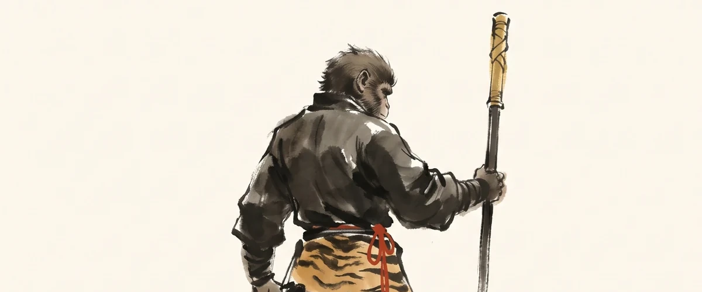

孙悟空

轨标：教学讲解 人物类别：取经团队 · 第一大弟子 数据指标：出场 100 回（全书），总提及 ~5000 次（待全量数据验证） 核验状态：未核验
一、出处与身世
诞生
孙悟空由东胜神洲傲来国花果山山顶一块仙石孕育而生。仙石三丈六尺五寸高，按周天三百六十五度；二丈四尺围圆，按二十四气；九窍八孔，按九宫八卦。这是全书最神话的一次诞生——他不是生出来的，是天地算出来的。
师承
- 第一任师父：菩提祖师（灵台方寸山、斜月三星洞）。学得地煞数七十二变、筋斗云。得名"孙悟空"。
- 第二任师父：唐僧（ unofficial，实为约束关系）。紧箍咒为契约。
- 第三任师父：如来（ implicit，授记为斗战胜佛）。
封号演变
| 阶段 | 封号 | 性质 | 出处 |
|---|---|---|---|
| 出世 | 石猴 | 自称 | 第 1 回 |
| 称王 | 美猴王 | 群猴拥戴 | 第 1 回 |
| 拜师 | 孙悟空 | 法号 | 第 2 回 |
| 反天 | 齐天大圣 | 自封→天庭承认 | 第 4-6 回 |
| 取经 | 行者 | 唐僧所赐 | 第 14 回 |
| 成佛 | 斗战胜佛 | 如来敕封 | 第 100 回 |
七个名字，七段身份。 从石到佛，是悟空的一生，也是一个人从"自在"到"约束"再到"觉悟"的一生。
二、性格弧线
第一阶段：天然之真（第 1-2 回）
石猴出世到拜师，是一段纯真的状态。称王不靠武力靠胆识，求道不为权势为长生。这时的悟空是一个"自然之子"。
第二阶段：反叛之烈（第 3-7 回）
学成归山后，龙宫借宝、地府销名、搅乱蟠桃会、大闹天宫。这一阶段的悟空是绝对的自我中心——他要的不是秩序，是"我所欲"。
关键心理转折：封弼马温时未怒，封齐天大圣后才知"虚职"。反叛的导火索不是被压迫，而是被轻视。
第三阶段：磨砺之苦（第 8-14 回）
被压五行山五百年。这段在原著中只寥寥数语，但却是悟空性格最关键的一次淬火。从"我要"到"我等"，五百年教会他一件事：天地之外还有天地。
第四阶段：取经之炼（第 14-99 回）
这是悟空性格最丰富的一段。他不再是单纯的反叛者，也不是顺从的徒弟。他在唐僧的紧箍咒下学会"忍"，在妖怪的诡计下学会"谋"，在搬救兵的过程中学会"求助"。
性格的关键演变： - 第 27 回三打白骨精：被逐。这是他第一次"被冤枉"，也是他与唐僧关系最险的一次。 - 第 57-58 回真假美猴王：这是悟空的"心魔"实体化。打死的不是六耳猕猴，是另一个自己。 - 第 81 回凌云渡脱胎：肉身褪去，彻底告别"石猴"。
第五阶段：成佛之归（第 100 回）
封为斗战胜佛。这是全书最具反讽的一次封号——一只反叛天庭的猴子，最终成了天庭秩序的一部分。但若细想，"斗战胜"三字，胜的从来不是外敌，是自己的心魔。
三、关键情节
| 回目 | 事件 | 性格体现 |
|---|---|---|
| 1 | 石猴出世、称美猴王 | 天真、胆识 |
| 2 | 拜师菩提祖师，得名悟空 | 求道之心 |
| 3-4 | 龙宫借宝、地府销名 | 自我膨胀 |
| 5-7 | 大闹天宫 | 反叛巅峰 |
| 14 | 五行山下被唐僧救出 | 隐忍重启 |
| 27 | 三打白骨精，被逐 | 委屈与忠诚 |
| 34 | 平顶山智斗金角银角 | 谋略成熟 |
| 46 | 车迟国斗法 | 戏谑与从容 |
| 57-58 | 真假美猴王 | 心魔对决 |
| 59-61 | 三借芭蕉扇 | 借力智慧 |
| 75 | 狮驼岭被吞 | 求生本能 |
| 98 | 凌云渡脱胎 | 告别旧我 |
| 100 | 成斗战胜佛 | 觉悟圆满 |
四、象征意义
一、心猿
原著多次以"心猿"指代悟空。这不是修辞，是核心隐喻——悟空就是"心"。心的特征是：跳跃不止、难以驯服、一旦驯服则成大道。
第 57 回真假美猴王，是"心猿"最直接的体现：二心搅乱大乾坤。打死的六耳猕猴不是别人，是悟空的另一个心。
二、五行之金
悟空属金（金箍棒、火眼金睛、金蝉子转世的师徒关系）。金在五行中主杀伐、主义。这与悟空"斗战胜佛"的封号暗合。
三、修心的具象
取经团队的五人，对应佛教"五蕴"： - 唐僧 = 戒（色蕴） - 悟空 = 心（识蕴，最活跃） - 八戒 = 欲（受蕴） - 沙僧 = 行（行蕴） - 白龙马 = 意（想蕴）
悟空是"心"，所以他的成长就是整个团队的成长。
五、历史原型与演变
一、历史原型：石磐陀
《大唐西域记》记载玄奘西行时，曾有一位胡人向导石磐陀。石磐陀是胡人，"胡"与"猢狲"同音，被认为是悟空的原型之一。但石磐陀在玄奘取经中途离去，并非全程护送。
二、《大唐三藏取经诗话》中的猴行者
南宋《大唐三藏取经诗话》中已出现"猴行者"，自称"花果山紫云洞八万四千铜头铁额猕猴王"。这是悟空形象的关键中间态。
三、元杂剧中的孙悟空
杨景贤《西游记》杂剧中，孙悟空已有"齐天大圣"的封号，但性格更为粗豪，且有妻室（金鼎国王之女）。这一形象比世德堂本更"野"。
四、世德堂本定稿
明万历二十年（1592）世德堂本《西游记》确立了今日所见的孙悟空形象：天地所生、拜师菩提、大闹天宫、保唐僧取经、成斗战胜佛。这一形象比杂剧更"雅"，比诗话更"全"。
五、现代演变
- 1986 央视版《西游记》：六小龄童演绎，成为大众标准形象
- 1995《大话西游》：周星驰解构，赋予爱情与悲剧色彩
- 2015《西游记之大圣归来》：国漫重启，归真于少年气
- 2024《黑神话：悟空》：游戏媒介，回归野性与反叛
六、延伸思考
- 悟空若没有紧箍咒，能否修成正果？
- 真假美猴王中被打死的，究竟是六耳猕猴还是悟空的"反叛之心"？
- 斗战胜佛的"胜"，胜的是谁？
- 若把悟空放在今天，他是创业者、自由职业者，还是被收编的技术骨干？
导航：返回人物谱系表 · 站点首页 · 孙悟空出场数据 · 大闹天宫专题 · 真假美猴王专题 · 唐僧 · 猪八戒 · 沙僧 · 白龙马